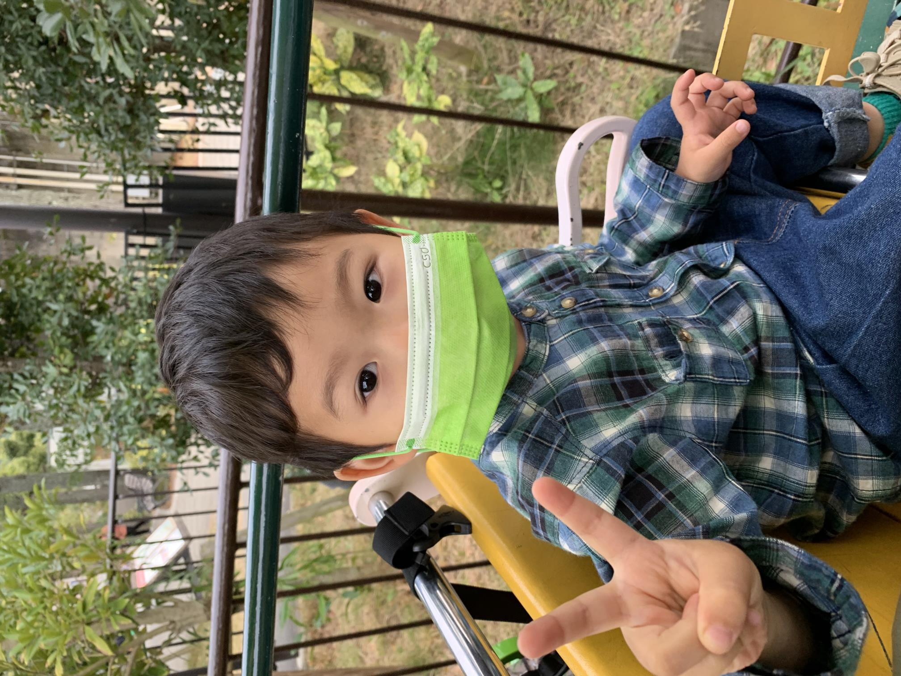
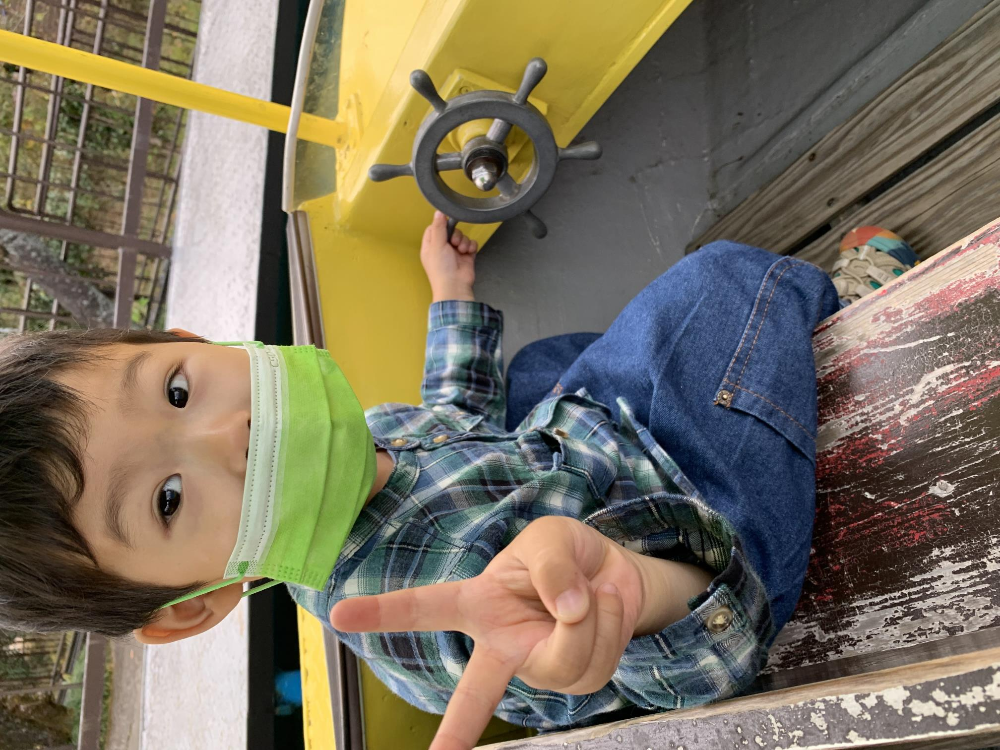
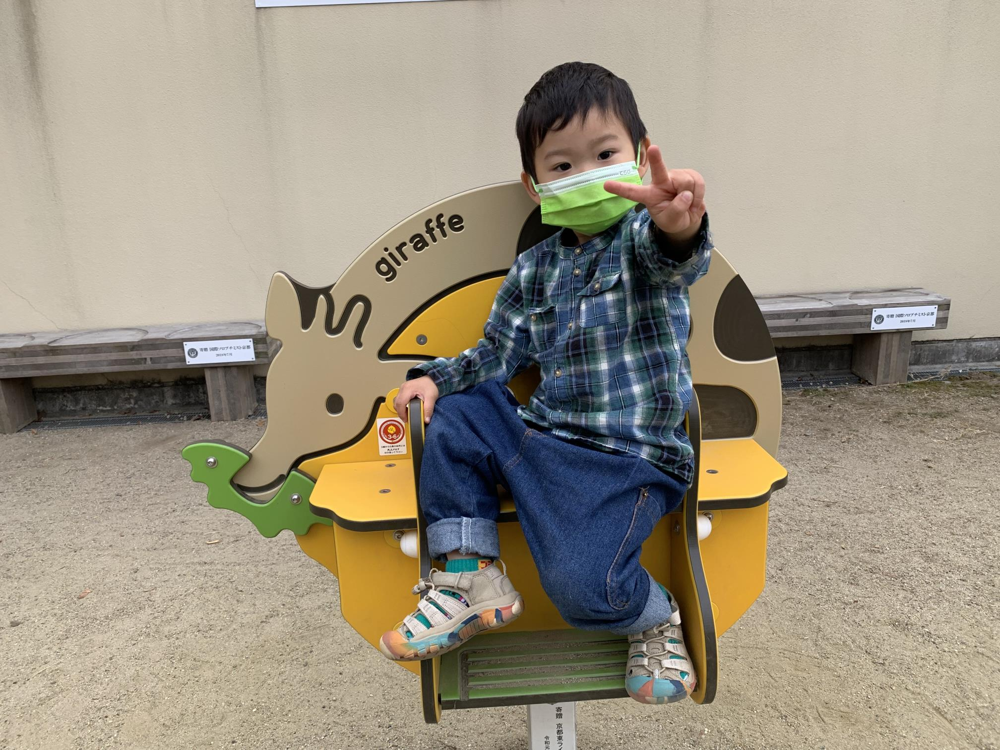

京都市動物園
2021年11月6日
  汽車と船に乗り、（動物園内の）公園で遊んだ
昼間は暖かく、夕方は少し寒かった。上着を持って行った方がいい。
そんなに暑くもないので、動物たちはよく動いてくれてよかった。
回る順番として、ゴリラ～像～キリン ゴリラは、15:30まで、像・キリンも4時頃には部屋に入ってしまう。それまでに周りきった方がいい。
昼は、山元麺蔵のかやくご飯。ダシが効いてておいしい。惇紀には量が多いので、最初に半分ぐらい取り分けた方がいい。
ベビーカーは借りれたら借りた方がいい。ないと惇紀を抱っこすることになる。
抱っこひもを持っていいって良かった。